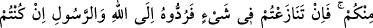
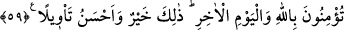
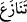

Bir gün İskender, şâirlerinden birine kızıp öldürülmesi için emir vermiş. Sonra da
şâirin malını arkadaşları arasında pay etmiş. Bunu neden böyle yaptığı sorulunca:
“Ölümüne suçlu olduğu için hükmettim. Malını ise arkadaşları ona şefâatçi olmasın diye
yaptım.” demiş. Bakınız malı almak, nasıl şefâatçi olmamaya sebep oluyor? Çünkü,
şâirin arkadaşları ona şefâat etmek isteseler ve şefâatte bulunsalardı, o malın geri
alınması gerekecekti. Onlar mala tamah edince şefâati terk ettiler.
Eğer insaf ehli olursan sen
Daha iyidir ömrünün rükû ve secdede geçmesinden
59- Ey îmân edenler! Allah’a itâat edin. Peygamber’e ve sizden olan ulülemre
(idarecilere) de itâat edin. Eğer bir hususta anlaşmazlığa düşerseniz –Allah’a ve
âhiret gününe inanıyorsanız- onu Allah’a ve Rasûl’e götürün (onların talimatına
göre halledin). Bu hem hayırlı, hem de netîce bakımından daha güzeldir.
“Ey îmân edenler! Allah’a itâat edin. Peygambere ve sizden olan ulülemre de itâat
edin.” Ulülemr, yâni emîr sâhibi olan idâreciler, hulefâ-i râşidîn ve onların peşinden
giden dosdoğru devlet başkanları gibi hak üzere hareket eden emirler ve adâletle
hükmeden idâreciler. Zâlim idâreciler ise, itâatin vâcib olması konusunda Allah ve
Rasûlüne atfedilmeyi hak etmekten uzaktırlar. Çünkü onlar, insanların mallarını haksız
yere ve zorla aldıkları için zorba hırsızlardır.
Cenab-ı Hak kullarına edep öğretmek için ‘’Allah’a itâat edin. Peygambere ve sizden
olan idârecilere de itâat edin” buyurarak Allah’a itâati tek başına peygambere ve
idârecilere itâati ise berâber zikretmiş; ayrı olarak “Sizden olan idârecilere itâat edin”
buyurmamıştır. Bu edep, Allah’ın adı ile başka varlıkların adını bir arada
zikretmemektedir. Mahluklara gelince onların adlarını bir arada zikretmek câizdir.
“Eğer bir hususta anlaşmazlığa düşerseniz” “__WORD__ ” nın kökü olan “__WORD__” kelimesi
aslında çekmek demektir. Çünkü anlaşmazlığa düşenlerden her biri diğerini kendi
tarafına çekmeye çalışır. Yâni, siz ve sizden olan idâreciler herhangi bir dînî konuda
ihtilâfa düşerseniz “-Allah’a ve âhiret gününe inanıyorsanız- onu Allah’a” Allah’ın
kitâbına “ve rasûl’e” O’nun (s.a.v) sünnetine “götürün”, mürâcaat edin. Çünkü
Allah’a ve âhiret gününe îmân etmek bunu gerektirir. Allah’a îmânın bunu gerektirmesi
gayet açıktır. Âhiret gününe inanmanın bunu gerektirmesi ise, bu emre karşı gelmek
yüzünden âhirette cezâ verilecek olması sebebiyledir.